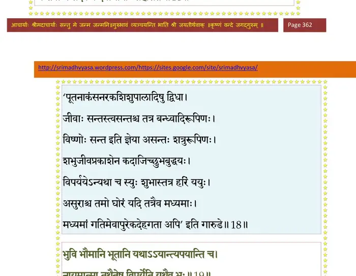
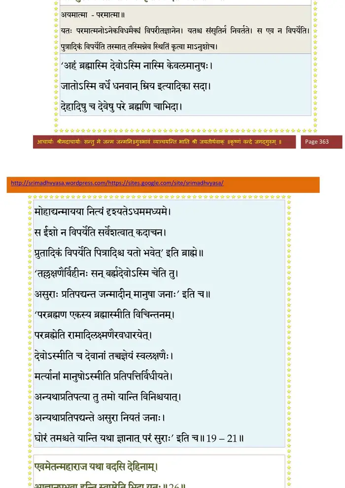
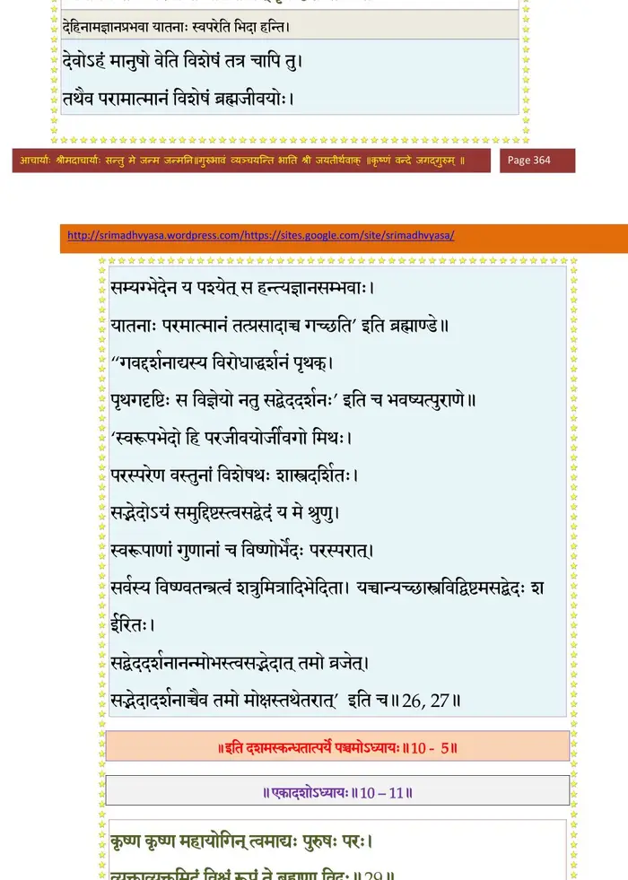

स्कन्ध 10 · अध्याय 5
श्लोक १
श्रीशुक उवाच -
बहिरन्तः पुरद्वारः सर्वाः पूर्ववदावृताः ।
ततो बालध्वनिं श्रुत्वा गृहपालाः समुत्थिताः।। १ ।।
बहिरन्तः पुरद्वारः सर्वाः पूर्ववदावृताः ।
ततो बालध्वनिं श्रुत्वा गृहपालाः समुत्थिताः।। १ ।।
श्लोक २
ते तु तूर्णमुपव्रज्य देवक्या गर्भजन्म तत् ।
आचख्युर्भोजराजाय यदुद्विग्नः प्रतीक्षते ।। २ ।।
आचख्युर्भोजराजाय यदुद्विग्नः प्रतीक्षते ।। २ ।।
श्लोक ३
स तल्पात् तूर्णमुत्थाय कालोऽयमिति विह्वलः ।
सूतीगृहमगाच्छीघ्रं प्रस्खलन् मुक्तमूर्धजः ।। ३ ।।
सूतीगृहमगाच्छीघ्रं प्रस्खलन् मुक्तमूर्धजः ।। ३ ।।
श्लोक ४
तमाह भ्रातरं देवी करुणं कृपणा सती ।
स्नुषेयं तव कल्याण स्त्रियं मा हन्तुमर्हसि ।। ४ ।।
स्नुषेयं तव कल्याण स्त्रियं मा हन्तुमर्हसि ।। ४ ।।
श्लोक ५
बहवो हिंसिता भ्रातः शिशवः पावकोपमाः ।
त्वया दैवनिसृष्टेन पुत्रिकैका प्रदीयताम् ।। ५ ।।
त्वया दैवनिसृष्टेन पुत्रिकैका प्रदीयताम् ।। ५ ।।
श्लोक ६
नन्वहं ते ह्यवरजा दीना हतसुता प्रभो ।
दातुमर्हसि मन्दाया ओमां चरमां प्रजाम् ।। ६ ।।
दातुमर्हसि मन्दाया ओमां चरमां प्रजाम् ।। ६ ।।
श्लोक ७
श्रीशुक उवाच -
उपगूह्यात्मजामेवं रुदन्त्या दीनदीनवत् ।
याचितस्तां विनिर्भर्त्स्य हस्तादाचिच्छिदे खलः ।। ७ ।।
उपगूह्यात्मजामेवं रुदन्त्या दीनदीनवत् ।
याचितस्तां विनिर्भर्त्स्य हस्तादाचिच्छिदे खलः ।। ७ ।।
श्लोक ८
तां गृहीत्वा चरणयोर्जातमात्रां स्वसुः सुताम् ।
अपोथयच्छिलापृष्ठे स्वार्थोन्मूलितसौहृदः ।। ८ ।।
अपोथयच्छिलापृष्ठे स्वार्थोन्मूलितसौहृदः ।। ८ ।।
श्लोक ९
सा तद्धस्तात् समुत्प्लुत्य सद्यो देव्यम्बरेरं गता ।
अदृश्यतानुजा विष्णोः सायुधाष्टमहाभुजा ।। ९ ।।
अदृश्यतानुजा विष्णोः सायुधाष्टमहाभुजा ।। ९ ।।
श्लोक १०
दिव्यस्रगम्बरालेपरत्नाभरणभूषिता ।
धनुःशूलेषुचर्मासिशङ्खचक्रगदाधरा ।। १० ।।
धनुःशूलेषुचर्मासिशङ्खचक्रगदाधरा ।। १० ।।
श्लोक ११
सिद्धचारणगन्धर्वैरप्सरःकिन्नरोरगैः ।
उपाहृतोरुबलिभिः स्तूयमानेदमब्रवीत् ।। ११ ।।
उपाहृतोरुबलिभिः स्तूयमानेदमब्रवीत् ।। ११ ।।
श्लोक १२
किं मया हतया मन्द जातः खलु तवान्तकः ।
यत्र क्वचित् पूर्वशत्रुर्मा हिंसीः कृपणान् वृथा ।। १२ ।।
यत्र क्वचित् पूर्वशत्रुर्मा हिंसीः कृपणान् वृथा ।। १२ ।।
श्लोक १३
इति प्रभाष्य तं देवी माया भगवती भुवि ।
बहुनामनिकेतेषु बहुनामा बभूव ह ।। १३ ।।
बहुनामनिकेतेषु बहुनामा बभूव ह ।। १३ ।।
श्लोक १४
तयाऽभिहितमाकर्ण्य कंसः परमविस्मितः ।
देवकीं वसुदेवं च विमुच्य प्रश्रितोऽब्रवीत् ।। १४ ।।
देवकीं वसुदेवं च विमुच्य प्रश्रितोऽब्रवीत् ।। १४ ।।
श्लोक १५
अहो भगिन्यहो भाम मया वां बत पाप्मना ।
पुरुषादैरिवाभ्येत्य बहवो हिंसिताः सुताः ।। १५ ।।
पुरुषादैरिवाभ्येत्य बहवो हिंसिताः सुताः ।। १५ ।।
श्लोक १६
स त्वहं त्यक्तकारुण्यस्त्यक्तज्ञातिसुहृत् खलः ।
हा कान् लोकान् गमिष्यामि ब्रह्महेव मृतः श्वसन्।। १६।।
हा कान् लोकान् गमिष्यामि ब्रह्महेव मृतः श्वसन्।। १६।।
श्लोक १७
दैवमप्यनृतं वक्ति न मर्त्या एव केवलम् ।
यद्विस्रम्भादहं पापः स्वसुर्निहतवान् सुतान् ।। १७ ।।
यद्विस्रम्भादहं पापः स्वसुर्निहतवान् सुतान् ।। १७ ।।
श्लोक १८
मा शोचेथां महाभागावात्मजान् स्वकृतम्भुजः ।
जन्तवो न सदैकत्र दैवाधीनाः सहासते ।। १८ ।।
जन्तवो न सदैकत्र दैवाधीनाः सहासते ।। १८ ।।
भागवततात्पर्यनिर्णय

श्लोक १९
भुवि भौमानि भूतानि यथाऽऽयान्त्यपयान्ति च ।
नायमात्मा तथैतेषु विपर्येति यथैव भूः ।। १९ ।।
नायमात्मा तथैतेषु विपर्येति यथैव भूः ।। १९ ।।
भागवततात्पर्यनिर्णय
श्लोक २०
यतोऽनेकविधोऽभेदो यत आत्मविपर्ययः ।
देहयोगवियोगश्च संसृतिर्न निवर्तते ।। २० ।।
देहयोगवियोगश्च संसृतिर्न निवर्तते ।। २० ।।
भागवततात्पर्यनिर्णय
श्लोक २१
तस्माद् भद्रे स्वतनयान् मया व्यापादितानपि ।
माऽनुशोच यतः सर्वः स्वकृतं विन्दतेऽवशः ।। २१ ।।
माऽनुशोच यतः सर्वः स्वकृतं विन्दतेऽवशः ।। २१ ।।
भागवततात्पर्यनिर्णय

श्लोक २२
यावद् हतोऽस्मि हन्ताऽस्मीत्यात्मानं मन्यतेऽस्वदृक् ।
तावत् तदभिमान्यज्ञो बाध्यबाधकतामियात् ।। २२ ।।
तावत् तदभिमान्यज्ञो बाध्यबाधकतामियात् ।। २२ ।।
श्लोक २३
क्षमध्वं मम दौरात्म्यं साधवो बन्धुवत्सलाः ।
इत्युक्त्वाऽश्रुमुखः पादौ श्यालस्वस्रोरथाग्रहीत् ।। २३ ।।
इत्युक्त्वाऽश्रुमुखः पादौ श्यालस्वस्रोरथाग्रहीत् ।। २३ ।।
श्लोक २४
मोक्षयामास निगडाद् विस्रब्धः कन्यकागिरा ।
देवकीं वसुदेवं च दर्शयन्नात्मसौहृदम् ।। २४ ।।
देवकीं वसुदेवं च दर्शयन्नात्मसौहृदम् ।। २४ ।।
श्लोक २५
भ्रातुर्वचनमाश्रुत्य क्षान्त्वा रोषं च देवकी ।
व्यसृजद् वसुदेवश्च प्रहस्य तमुवाच ह ।। २५ ।।
व्यसृजद् वसुदेवश्च प्रहस्य तमुवाच ह ।। २५ ।।
श्लोक २६
एवमेतन्महाराज यथा वदसि देहिनाम् ।
अज्ञानप्रभवा हन्ति स्वपरेति भिदा यतः।। २६ ।।
अज्ञानप्रभवा हन्ति स्वपरेति भिदा यतः।। २६ ।।
भागवततात्पर्यनिर्णय
श्लोक २७
शोकहर्षभयद्वेषलोभमोहमदान्विताः ।
मिथो घ्नन्तो न पश्यन्ति भावैर्भावान् पृथग्दृशः ।। २७ ।।
मिथो घ्नन्तो न पश्यन्ति भावैर्भावान् पृथग्दृशः ।। २७ ।।
भागवततात्पर्यनिर्णय

श्लोक २८
कंस एवं प्रसन्नाभ्यां विस्रब्धः प्रतिभाषितः ।
देवकीवसुदेवाभ्यामनुज्ञातोऽविशद् गृहम् ।। २८ ।।
देवकीवसुदेवाभ्यामनुज्ञातोऽविशद् गृहम् ।। २८ ।।
श्लोक २९
तस्यां रात्र्यां व्यतीतायां कंस आहूय मन्त्रिणः ।
तेभ्य आचष्ट तत् सर्वं यदुक्तं योगनिद्रया ।। २९ ।।
तेभ्य आचष्ट तत् सर्वं यदुक्तं योगनिद्रया ।। २९ ।।
श्लोक ३०
आकर्ण्य भर्तुर्गदितं तमूचुर्देवशत्रवः ।
देवान् प्रति कृतामर्षा दैतेया नातिकोविदाः ।। ३० ।।
देवान् प्रति कृतामर्षा दैतेया नातिकोविदाः ।। ३० ।।
श्लोक ३१
एवं चेत् तर्हि भोजेन्द्र पुरग्रामव्रजादिषु ।
अनिर्दशान् निर्दशांश्च हनिष्यामोऽद्य बालकान् ।। ३१ ।।
अनिर्दशान् निर्दशांश्च हनिष्यामोऽद्य बालकान् ।। ३१ ।।
श्लोक ३२
किमुद्यमैः करिष्यन्ति देवाः समरभीरवः ।
नित्यमुद्विग्नमनसो ज्याघोषैर्धनुषस्तव ।। ३२ ।।
नित्यमुद्विग्नमनसो ज्याघोषैर्धनुषस्तव ।। ३२ ।।
श्लोक ३३
अस्यतस्ते शरव्रातैर्हन्यमानाः समन्ततः ।
जिजीविषव उत्सृज्य पलायनपरा ययुः ।। ३३ ।।
जिजीविषव उत्सृज्य पलायनपरा ययुः ।। ३३ ।।
श्लोक ३४
केचित् प्राञ्जलयो भीता न्यस्तशस्त्रा दिवौकसः ।
मुक्तकक्ष्यशिखाः केचिद् भीताः स्म इति वादिनः।। ३४।।
मुक्तकक्ष्यशिखाः केचिद् भीताः स्म इति वादिनः।। ३४।।
श्लोक ३५
न त्वं विस्मृतशस्त्रास्त्रान् विरथान् भयसन्नतान् ।
हंस्यन्यासक्तमनसो भग्नचापानयुध्यतः ।। ३५ ।।
हंस्यन्यासक्तमनसो भग्नचापानयुध्यतः ।। ३५ ।।
श्लोक ३६
किं क्षेमशूरैर्विबुधैरसंयुगविकत्थनैः ।
रहोजुषा किं हरिणा शम्भुना वा वनौकसा ।। ३६ ।।
रहोजुषा किं हरिणा शम्भुना वा वनौकसा ।। ३६ ।।
श्लोक ३७
किमिन्द्रेणाल्पवीर्येण ब्रह्मणा वा तपस्यता ।
तथापि देवाः सापत्न्यान्नोपेक्ष्या इति मन्महे ।
ततस्तन्मूलखनने नियुङ्क्ष्वास्माननुव्रतान्।। ३७ ।।
तथापि देवाः सापत्न्यान्नोपेक्ष्या इति मन्महे ।
ततस्तन्मूलखनने नियुङ्क्ष्वास्माननुव्रतान्।। ३७ ।।
श्लोक ३८
यथाऽऽमयोऽङ्गे समुपेक्षितो नृभिर्न शक्यते रूढपदश्चिकित्सितुम् ।
यथेन्द्रियग्राम उपेक्षितस्तथा रिपुर्महान् लब्धबलो न चाल्यते ।। ३८ ।।
यथेन्द्रियग्राम उपेक्षितस्तथा रिपुर्महान् लब्धबलो न चाल्यते ।। ३८ ।।
श्लोक ३९
मूलं विष्णुर्हि देवानां यत्र धर्मः सनातनः ।
तस्य च ब्रह्मगोविप्रास्तपो यज्ञाः सदक्षिणाः।। ३९ ।।
तस्य च ब्रह्मगोविप्रास्तपो यज्ञाः सदक्षिणाः।। ३९ ।।
श्लोक ४०
तस्मात् सर्वात्मना राजन् ब्राह्मणान् ब्रह्मवादिनः ।
तपस्विनो यज्ञशीलान् गाश्च हन्मो हविर्दुघाः ।। ४० ।।
तपस्विनो यज्ञशीलान् गाश्च हन्मो हविर्दुघाः ।। ४० ।।
श्लोक ४१
विप्रा गावश्च वेदाश्च तपः सत्यं दमः शमः ।
श्रद्धा दया तितिक्षा च क्रतवश्च हरेस्तनूः।। ४१ ।।
श्रद्धा दया तितिक्षा च क्रतवश्च हरेस्तनूः।। ४१ ।।
श्लोक ४२
स हि सर्वसुराध्यक्षो ह्यसुरद्विड् गुहाचरः ।
तन्मूला देवताः सर्वाः सेश्वराः सचतुर्मुखाः।। ४२ ।।
तन्मूला देवताः सर्वाः सेश्वराः सचतुर्मुखाः।। ४२ ।।
श्लोक ४३
एवं दुर्मन्त्रिभिः कंसः सह सम्मन्त्र्य दुर्मतिः ।
ब्रह्महिंसां हितं मेने कालपाशावृतोऽसुरः ।। ४३ ।।
ब्रह्महिंसां हितं मेने कालपाशावृतोऽसुरः ।। ४३ ।।
श्लोक ४४
सन्दिश्य साधुलोकस्य कदने कदनप्रियान् ।
कामरूपधरान् दिक्षु दानवान् गृहमाविशत् ।। ४४ ।।
कामरूपधरान् दिक्षु दानवान् गृहमाविशत् ।। ४४ ।।
श्लोक ४५
ते वै रजःप्रकृतयस्तमसा मूढचेतसः ।
सतां विद्वेषमाचेरुरारादागतमृत्यवः ।। ४५ ।।
सतां विद्वेषमाचेरुरारादागतमृत्यवः ।। ४५ ।।
श्लोक ४६
आयुः श्रियं यशो धर्मं लोकानाशिष एव च ।
हन्ति श्रेयांसि सर्वाणि पुंसो महदतिक्रमः।। ४६ ।।
हन्ति श्रेयांसि सर्वाणि पुंसो महदतिक्रमः।। ४६ ।।
।। इति श्रीमद्भागवते दशमस्कन्धे पञ्चमोऽध्यायः ।।